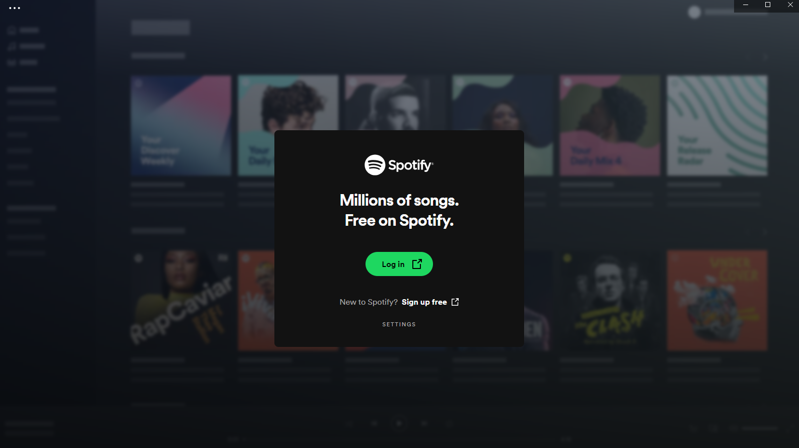

Once you have created an account and selected your subscription service, you can go to your OS respected application store.
Microsoft: Microsoft Store
Apple: App Store
Use the search bar to and search "spotify". Click on the install button. See logo below so you can easily identify the application
Once installed, a pop up from the application stating to sign in or sign up. If you skipped step 1, the app will open a browser window to the sign up/in page.

Once signed in to the profile, you will be able to access all the music and podcasts you like!
Here is a simple video on how to download for visual purporses